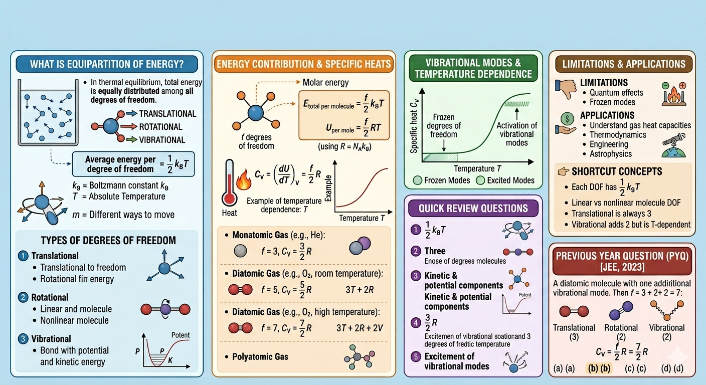

Equipartition of Energy

Image generated by Google AI
Think about a regular day, you pour tea into a cup, feel the warmth in your hands, maybe notice how steam rises and slowly disappears into the air. What you are witnessing, without realizing it, is energy constantly moving, redistributing, and transforming at a microscopic level. The warmth you feel is not just “heat” in a vague sense, it is the collective motion of countless molecules, each carrying and sharing energy in its own tiny way. This invisible choreography is exactly what physics tries to describe.
Energy is one of the fundamental concepts in physics. It manifests in various forms such as kinetic energy, potential energy, thermal energy, and more. When studying gases and their microscopic behavior, the equipartition of energy principle becomes crucial in understanding how energy is shared among the different ways a molecule can move or vibrate.
What is Equipartition of Energy?
The law of equipartition of energy states that at thermal equilibrium, the total energy is equally distributed among all the available degrees of freedom of the molecules in the system. Each degree of freedom contributes equally to the total energy, with an average energy of \( \frac{1}{2} k_B T \) per degree of freedom, where \( k_B \) is the Boltzmann constant and \( T \) is the absolute temperature.
A subtle but very important point here is that this result comes from classical statistical mechanics and assumes that energy can vary continuously. This assumption works extremely well at ordinary temperatures but begins to fail when quantum effects become important (we will revisit this later).
Degrees of freedom are independent ways in which a molecule can store energy, such as translational, rotational, and vibrational motions.
Types of Degrees of Freedom
- Translational Degrees of Freedom: Movement along the x, y, and z axes. Every molecule has three translational degrees of freedom.
- Deeper Insight: These correspond directly to the kinetic energy expression: \[ E = \frac{1}{2} m(v_x^2 + v_y^2 + v_z^2) \] Each squared velocity term contributes \( \frac{1}{2} k_B T \), which is why there are exactly 3 translational degrees of freedom.
- Rotational Degrees of Freedom: Rotation about different axes. Linear molecules have two rotational degrees of freedom, while nonlinear molecules have three.
- Subtle Point: Rotation about the molecular axis in linear molecules does not contribute significantly because the moment of inertia is extremely small, making its energy spacing too large to be thermally excited at ordinary temperatures.
- Vibrational Degrees of Freedom: Molecules can vibrate in ways that involve stretching or bending bonds. Each vibrational mode counts as two degrees of freedom (one kinetic and one potential).
- Important Insight: A vibrational mode behaves like a harmonic oscillator: \[ E = \frac{1}{2}k x^2 + \frac{1}{2}mv^2 \] This is why it contributes twice, one for potential energy and one for kinetic energy.
Energy Contribution Per Degree of Freedom
For each degree of freedom, the average energy is:
Thus, for a molecule with \( f \) degrees of freedom, the total energy per molecule is:
On a molar basis, using \( R = N_A k_B \) (where \( N_A \) is Avogadro's number), the internal energy per mole becomes:
This formula allows us to calculate important thermodynamic quantities like the molar specific heat at constant volume \( C_V \).
Physical Interpretation: Increasing temperature doesn’t “create” new types of energy, it simply increases how much energy each degree of freedom carries.
Equipartition and Specific Heats
The molar specific heat at constant volume \( C_V \) is the temperature derivative of internal energy:
This means the more degrees of freedom a molecule has, the higher its specific heat capacity, because more energy is needed to raise the temperature of the gas.
Conceptual Insight: Think of degrees of freedom as “energy storage slots.” More slots → more energy required → higher heat capacity.
Example: Monatomic, Diatomic, and Polyatomic Gases
-
Monatomic gases (e.g., helium, neon): Only translational degrees of freedom are active, so \( f = 3 \). Therefore,
\[ C_V = \frac{3}{2} R \]
Why no rotation? For single atoms, rotation does not change configuration, so it doesn’t store energy meaningfully.
-
Diatomic gases (e.g., nitrogen, oxygen): Besides translation (\(3\)), they have rotational degrees of freedom (\(2\)) and potentially vibrational modes. At room temperature, vibrational modes are usually "frozen," so
\[ f = 3 + 2 = 5, \quad C_V = \frac{5}{2} R \]
Important Note: This explains why experimentally measured \( C_V \) matches theory only when we correctly account for active degrees of freedom.
- Polyatomic gases: More complex molecules have additional rotational and vibrational modes, increasing \( f \) and therefore the molar specific heat.
Vibrational Modes and Temperature Dependence
Vibrational modes contribute two degrees of freedom each, one kinetic and one potential. However, these modes require more energy to activate and thus often become significant only at higher temperatures. This explains why the molar specific heat of gases increases with temperature, as more vibrational modes get excited.
Deep Insight (Quantum Link): Vibrational energy levels are quantized: \[ E_n = \left(n + \frac{1}{2}\right)h\nu \] At low temperatures, thermal energy \( k_B T \) is too small to excite these levels, so vibrations remain inactive.
Limitations of Equipartition Theorem
- Quantum effects: At low temperatures, quantum mechanics restricts the excitation of vibrational modes.
- Frozen degrees of freedom: Some modes remain inactive due to insufficient thermal energy.
- Failure at very low temperatures: Heat capacities approach zero instead of constant values predicted by classical theory.
Modern physics accounts for these limitations by using quantum statistical mechanics, but equipartition remains a valuable classical approximation.
Shortcut Concepts
- Each degree of freedom has average energy \( \frac{1}{2} k_B T \).
- Total energy per mole: \( U = \frac{f}{2} RT \).
- Molar specific heat at constant volume: \( C_V = \frac{f}{2} R \).
- Translational motion always contributes 3 degrees of freedom.
- Linear molecules have 2 rotational degrees of freedom, nonlinear molecules have 3.
- Vibrational modes contribute 2 degrees of freedom each but may be inactive at low temperatures.
- Golden Tip: Always check temperature before counting vibrational modes in exams.
Applications of Equipartition of Energy
- Understanding gas heat capacities: Predicts and explains why gases have different specific heats.
- Thermodynamics and statistical mechanics: Provides foundation for microscopic explanations of macroscopic properties.
- Engineering: Important for designing engines and refrigeration systems where gas properties matter.
- Astrophysics and atmospheric science: Helps describe behavior of gases under varying temperatures and pressures.
- Everyday Life: Explains why air heats up quickly but water takes longer, different degrees of freedom and energy storage.
Quick Review Questions
-
What is the average energy per degree of freedom at temperature \( T \)?
\( \frac{1}{2} k_B T \) -
How many translational degrees of freedom does a gas molecule have?
Three. -
Why do vibrational modes contribute twice as many degrees of freedom?
Because each vibrational mode has both kinetic and potential energy components. -
What is the molar specific heat at constant volume for a monatomic gas?
\( \frac{3}{2} R \). -
Why does the specific heat of diatomic gases increase at higher temperatures?
Because vibrational modes become excited.
Previous Year Question (PYQ)
Q.1
According to law of equipartition of energy the molar specific heat of a diatomic gas at constant volume where the molecule has one additional vibrational mode is : [JEE, 2023]
a) \( \frac{9}{2} R \), b) \( \frac{7}{2} R \), c) \( \frac{5}{2} R \), d) \( \frac{3}{2} R \)
Solution:
Step 1: Determine degrees of freedom
- Translational: 3
- Rotational (diatomic): 2
- Vibrational mode: Each vibrational mode counts as 2 degrees of freedom (1 kinetic + 1 potential)
Step 2: Use formula for molar specific heat at constant volume
Answer: (b) \( \frac{7}{2} R \)
Exam Insight: Questions often test whether you remember that each vibrational mode contributes two degrees—not one.